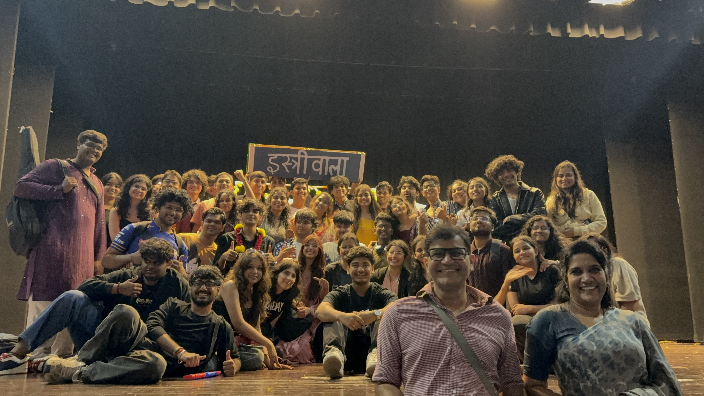
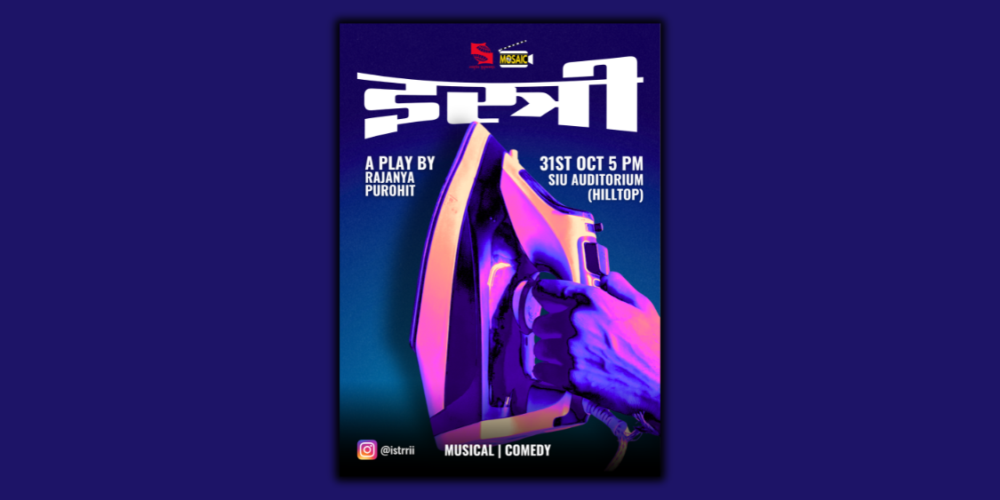

istri, 2025
Director & Writer
Istri is a full-length comedic musical theatre production that explores its story through humour, music, and performance, featuring three original songs. Written and directed by me, the production was brought to life by a team of 30+ people across performance, music, production, and backstage. It was performed to an audience of 400+ people on 31 October 2025 and went on to receive multiple awards. Beyond the stage, I led the production’s marketing campaign, shaping its visual identity, promotion, and audience outreach from the ground up.
Photos: Aryan Kapil
Instagram: istrrii




Afra Tafri, 2023
Writer & Co-Director
Afra Tafri was the first full-length play I wrote, inspired by the chaotic humour and ensemble-driven storytelling of Priyadarshan films. A classic comedy of errors, the play follows a series of misunderstandings, coincidences, and escalating chaos. Written by me and brought to stage with a team of 40+ people, the production marked my first experience of building a play from the ground up, from writing and direction to coordinating the people behind the production. Staged on 31 May 2023.
Co-Director: Maan Madan